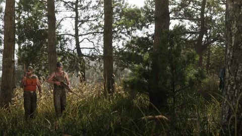

O dinheiro
Assaltos a comércios
Valor publicado: nenhum
Dinheiro vivo e um butim para revender; nenhum valor. 6
Visto na mídiaVer a ficha
Atividades paralelas, GTA VI
Pescar, caçar, mergulhar, assaltar uma loja de conveniência ou roubar um carro: tudo o que a Rockstar mostrou ou anunciou fora da história, com quanto rende quando isso foi publicado.
Cada atividade diz de onde vem: texto da Rockstar, imagem oficial, matéria de imprensa ou levantamento de jogadores. Nenhum valor foi publicado até agora: o site não inventa nenhum. Entender os status.
As fichas
Uma ficha para cada atividade sobre a qual a Rockstar falou ou mostrou o bastante: o que é, onde praticar, do que você precisa e quanto rende.
Crime e dinheiro Crime e dinheiro
Crime e dinheiro Natureza, água e esporte
Natureza, água e esporte Natureza, água e esporte
Natureza, água e esporte Natureza, água e esporte
Natureza, água e esporte Natureza, água e esporte
Natureza, água e esporte Natureza, água e esporte
Natureza, água e esporteTodas as atividades
Uma linha por atividade, com seu status e suas fontes. Quando outra página do site já trata dela, a linha leva até lá.
Mostrar
Atividades exibidas: 29

Crime e dinheiro, Visto na mídia
Lojas de conveniência, postos de gasolina, loja de bebidas: a Rockstar mostra assaltos desde o Trailer 1, e Rob Nelson disse à Famitsu que dá para fazê-los sozinho ou em dupla. 2623
Lugares identificados no nosso mapa: não é um local confirmado para a atividade.


Crime e dinheiro, Visto na mídia
Um frame do Extended Look mostra homens mascarados em volta de um furgão aberto. Atividade livre ou cena da história: nada indica. 4
Nenhum lugar foi marcado ainda para esta atividade: nada é colocado ao acaso.

Crime e dinheiro, Oficial
A Edição Ultimate permite saquear o esconderijo dos PTT Youngin$; segundo Rob Nelson na Famitsu, o mapa marca os esconderijos e o que eles guardam, dinheiro ou drogas. Cada gangue envolvida é detalhada na própria página. 65
Lugares identificados no nosso mapa: não é um local confirmado para a atividade.

Crime e dinheiro, Oficial
Segundo os textos das edições, cada garagem pessoal tem um lugar escondido para guardar o butim, que um receptador local compra com desconto; Rob Nelson acrescenta na Famitsu que a droga dos esconderijos também vai para ele. 3286
Lugares identificados no nosso mapa: não é um local confirmado para a atividade.
Natureza, água e esporte, Oficial
A Rockstar apresenta Mount Kalaga como um ponto de pesca; Rob Nelson, citado pelo criador de conteúdo TGG, promete uma pesca tão completa quanto em Red Dead Redemption 2, com os peixes devolvidos à água. 114
Lugares identificados no nosso mapa: não é um local confirmado para a atividade.

Natureza, água e esporte, Visto na mídia
Mais de 170 espécies segundo a Game Informer, algumas delas raras, a descobrir ou lendárias, que dá para rastrear. 17
Lugares identificados no nosso mapa: não é um local confirmado para a atividade.


Natureza, água e esporte, Visto na mídia
A matéria de capa da Game Informer cita trilhas entre os encontros de Jason e Lucia. 19
Lugares identificados no nosso mapa: não é um local confirmado para a atividade.


Natureza, água e esporte, Visto na mídia
Por volta de 18:31 do Extended Look, um tiro cronometrado com pistola e arma automática. 24
Lugares identificados no nosso mapa: não é um local confirmado para a atividade.


Cidade, noite e estilo, Oficial
Uma encomenda da edição Ultimate: encontrar carros clássicos abandonados e restaurá-los. 5
Nenhum lugar foi marcado ainda para esta atividade: nada é colocado ao acaso.

Cidade, noite e estilo, Visto na mídia
Um feed de rede social aparece na tela no Trailer 1; o que dá para fazer nele não foi publicado. 2
Nenhum lugar foi marcado ainda para esta atividade: nada é colocado ao acaso.

Cidade, noite e estilo, Visto na mídia
Jason assistindo a comerciais de paródia, no Extended Look. 25
Nenhum lugar foi marcado ainda para esta atividade: nada é colocado ao acaso.
O mapa
Escolha uma atividade: os lugares dela se acendem no mapa de Leonida. São lugares identificados no nosso mapa, nunca um local inventado; uma atividade sem lugar publicado avisa isso.
29 atividades
Nenhum resultado.

Cidade, noite e estilo
Clube de strip-tease
Onde encontrar: Lugares identificados no nosso mapa
Lugares do nosso mapa ligados a esta atividade: Jack of Hearts, Delights.
O dinheiro
A Rockstar descreve mecânicas, nunca valores. Aqui está, atividade por atividade, o que foi publicado.
Fazer meus cálculosO dinheiro
Valor publicado: nenhum
Dinheiro vivo e um butim para revender; nenhum valor. 6
Visto na mídiaVer a ficha
O dinheiro
Valor publicado: nenhum
Dinheiro ou drogas, estimados no mapa antes de entrar; nenhum número. 6
Visto na mídiaVer a atividade
O dinheiro
Valor publicado: nenhum
Revendidos ao receptador; o Pay ’n’ Spray informa o valor deles. Nenhum valor. 67
Visto na mídiaVer a ficha
O dinheiro
Valor publicado: nenhum
Comprados pelo receptador com um desconto cuja taxa não foi publicada. 328
OficialVer a atividade
O dinheiro
Valor publicado: nenhum
Dinheiro ao revender o que você pega; nenhum valor. 15
Visto na mídiaVer a ficha
O dinheiro
Valor publicado: nenhum
Nada para revender: os peixes são devolvidos à água. Desafios e colecionáveis como recompensa. 14
Visto na mídiaVer a ficha
O dinheiro
Valor publicado: nenhum
Sem dinheiro: músculo e força. 22
Visto na mídiaVer a ficha
O dinheiro
Valor publicado: nenhum
Eles custam dinheiro; nenhum preço publicado. 25
Visto na mídiaVer a atividade
O dinheiro
Valor publicado: nenhum
Carros clássicos restaurados; nenhuma quantia anunciada. 5
OficialVer a atividade
Rob Nelson também avisa que a história às vezes espera você juntar dinheiro suficiente: é para isso que servem as atividades paralelas. A Rockstar não publicou nenhum ganho nem nenhuma duração de missão: as atividades da calculadora são exemplos para você trocar pelos seus números. 27
Fontes oficiais
As atividades paralelas foram aparecendo aos poucos: uma cena de trailer, uma página de região, um texto de edição, uma demonstração e, depois, uma matéria de capa de revista.
A dupla assalta uma loja de bebidas, de rosto coberto, antes de fugir.

Jason e Lucia aceleram de jet ski; a página de Mount Kalaga promete caça, pesca e trilhas off-road.

Garagens com um lugar escondido para o butim, um esconderijo de gangue para saquear e carros de Wyman para restaurar.

Academia, basquete, estande de tiro, corridas noturnas, roubo de carro e assaltos a postos de gasolina.

Rob Nelson detalha os assaltos, os receptadores e os carros de luxo protegidos por alarme e rastreador.

Uma pesca sem revenda e uma caça que rende dinheiro: as falas de Rob Nelson, relatadas pelo criador de conteúdo TGG, que visitou a Rockstar North.

A matéria de capa da revista lista as atividades confirmadas e anuncia mais de 170 espécies de animais.

Uma atividade “vista na mídia” vem de uma imagem ou de um vídeo oficial sem texto da Rockstar, ou de um veículo que a relata, incluindo entrevistas com membros da Rockstar.
Observações dos jogadores
Os jogadores identificam os lugares e os detalhes das prévias. Veja o que eles afirmam, citado como tal.
Essas pistas ficam fora da calculadora e fora das fichas enquanto a Rockstar não as confirmar.
Perguntas em aberto
A lista já é longa; o que mais falta são os números e as regras do jogo.
Nenhum valor foi publicado: nem butim, nem prêmio de corrida, nem preço de revenda.
Nunca anunciados. Quadras de tênis e um campo de golfe aparecem no mapa dos jogadores, sem dizer que dá para jogar lá.
Táxi, reboque, entregas, caçador de recompensas: nenhuma menção nas fontes consultadas.
Nada anunciado: só os esconderijos e as garagens são descritos.
Citados em relatos ou visíveis no fundo de uma captura, sem confirmação.
Vistos nos vídeos; nada diz que dá para participar.
O saque do esconderijo dos PTT Youngin$ e a restauração dos carros de Wyman fazem parte da edição; não foi dito se dá para acessá-los sem ela.
Cada resposta vai entrar na lista de atividades, com a fonte, assim que a Rockstar publicá-la.
Ferramentas do site
Enquanto os números não chegam, compare suas atividades, localize os lugares e encontre o que outras páginas já detalham.
Cada ficha de atividade tem seu próprio quadro da calculadora, com a pergunta correspondente.
Perguntas
As perguntas que as pessoas digitam num buscador, com respostas curtas e datadas.
32 fontes consultadas
Cada atividade e cada frase desta página remetem a uma fonte datada. As páginas foram conferidas em 4 de outubro de 2026 por meio de um buscador: abri-las diretamente estava bloqueado a partir do nosso ambiente de trabalho naquele dia.
Página, texto ou vídeo publicados pela Rockstar nos próprios canais (site de GTA VI, Newswire, trailers, Extended Look), ou pela Take-Two, Sony ou Microsoft, escritos como eles disseram, com a data.
O que uma imagem ou sequência oficial mostra sem um texto da Rockstar que diga isso (um plano de trailer, uma captura, um momento do Extended Look, com o minuto exato quando é conhecido), ou o que um veículo de imprensa identificado relata, incluindo declarações de um responsável da Rockstar, com o veículo e a data.
Comparação feita por jogadores, por uma wiki ou por um site de fãs (lugar real, ator, condado). Citada como tal, nunca apresentada como confirmada.
Pergunta sem resposta publicada: preço, compra, acesso, papel na história. Anotamos a pergunta para não adivinhar a resposta.
A página do Mount Kalaga National Park o apresenta como uma área de primeira para caça, pesca e trilhas off-road.
O assalto à loja de bebidas (Trailer 1), o jet ski de Jason e Lucia e o clube de Boobie (Trailer 2).
As capturas dessa página: pesca, caçadores, caiaque, mergulho, aerobarco, academia, off-road, minigolfe, sinuca, bares.
A demonstração de cerca de 26 minutos: academia, basquete, estande de tiro, corridas, roubo de carro, assaltos, furgão blindado.
O esconderijo dos PTT Youngin$ para saquear, a coleção de carros clássicos de Wyman, as lojas e oficinas da edição.
Assaltos sozinho ou em dupla, joalherias e bancos pequenos mais vigiados, esconderijos marcados no mapa, receptadores, carros de luxo com alarme e rastreador.
A mesma entrevista em inglês: câmeras de segurança para destruir, valor de revenda informado pelo Pay ’n’ Spray, lojas e salões.
Retoma os textos das edições: cada garagem tem um lugar escondido para os objetos roubados, que um receptador local compra com desconto.
A garagem de Shore Court: armário de armas e depósito para o receptador.
O esconderijo de Jason, com o caiaque Crest e a Dinka Enduro dele, e as garagens das edições.
Rob Nelson: alguns carros estacionados continuam trancados enquanto você não tiver as ferramentas para entrar.
As mesmas falas de Rob Nelson sobre as ferramentas necessárias para certos carros.
Por volta de 6:05 do Extended Look: a escolha entre slim jim e vidro quebrado; os carros recentes exigem um clonador de chave.
Rob Nelson ao TGG: os peixes são sempre soltos; a pesca leva a desafios, colecionáveis e momentos da história.
Falas relatadas de Rob Nelson: pesca sem revenda, caça que rende dinheiro.
O relato do TGG: a caça rende dinheiro com a revenda do que você pega, e passa por um personagem que Jason conhece.
Mais de 170 espécies; algumas, raras, a descobrir ou lendárias, podem ser rastreadas.
A lista da matéria de capa da Game Informer: base jump, sinuca, academias, caiaque, minigolfe, mergulho, corridas de rua e off-road, zoológicos, aerobarco e jet ski.
A mesma lista, com as trilhas entre os encontros de Jason e Lucia.
Rob Nelson: a comida influencia o peso de Jason e Lucia, e o exercício os deixa visivelmente mais musculosos.
As mesmas falas de Rob Nelson sobre o peso e os músculos.
Rob Nelson: academias para treinar e ganhar músculo e força; o artigo também fala de mensalidades.
Lucia no supino, apertando no ritmo; assaltos a postos de gasolina, com bandana no rosto.
O basquete em frente ao esconderijo de Jason, o estande de tiro cronometrado, a arma escondida de Lucia antes de entrar em uma loja.
Corridas noturnas, motos, stock car e rali, base jump, TV, clube de strip-tease onde você gasta dinheiro.
O assalto à loja de bebidas do Trailer 1, por volta de 1:16.
Retoma a fala de Rob Nelson: vai ser preciso ganhar dinheiro fora das missões para fazer a história avançar.
Mistura falas de Rob Nelson com detalhes das prévias: um receptador para cada tipo de butim, escaneamento do carro antes do roubo.
Segundo prévias da imprensa, quase todas as lojas podem ser assaltadas; nenhuma confirmação da Rockstar.
Academias, circuitos, zoológico e a loja assaltada marcados no mapa e associados a lugares reais; os nomes no jogo ainda precisam ser confirmados.
O criador de conteúdo TGG diz ter visto um modo foto, sem modo diretor; nada da Rockstar.
Textos das edições: em cada garagem pessoal, um armário de armas e um lugar escondido para objetos roubados, que um receptador local compra com desconto.
O que não fazemos. Nenhum dado dos vazamentos de 2022 ou de 2026, nenhuma atividade adicionada sem fonte, nenhum valor chutado. Os status são explicados no Tutorial.
A calculadora
Os ganhos chegam com o jogo. Escreva quanto um golpe, uma corrida ou uma revenda renderia, a duração e sua parte: a calculadora compara suas atividades por hora de jogo.
E depois?
Cada ficha será completada com o jogo: o que se encontra lá, o que se faz lá, quanto rende. Nada inventado até lá.